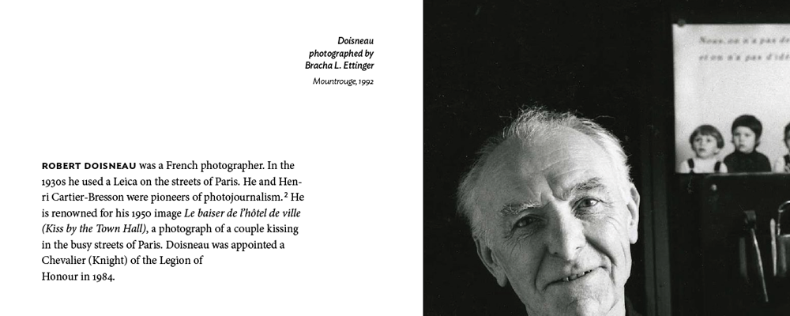

View PDF
I typeset the Wikipedia article on French photographer Robert Doisneau in an effort to understand the use of typography to convey artistic style and mood, and to experiment with page layout and whitespace.
Doisneau's photography is described in the article as "modest", and his subjects are portrayed with respect and reverence. So it felt appropriate to use a quietly dignified visual style that emphasized typography and simplicity. The body text and section headlines were set in Minion Pro, accompanied by Ideal Sans for certain information (image captions, auxiliary information in the exhibitions list). Both typefaces, I feel, have a good blend of classicism and clean lines.
Text blocks are given generous margins in a fairly classical style (mirrored layout, with a larger margin on the right side of a page). The reading experience is intended to feel very peaceful, with a good amount of space for a reader's hands to hold the pages.
Adapting the Wikipedia format to a print publication brought up some interesting translational design problems—in particular, the list of exhibitions (on the last few pages) required a good amount of attention so the information could be conveyed clearly.
- Year Fall 2012
- For Independent study